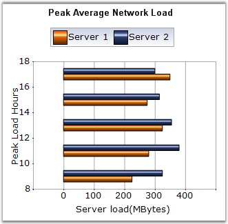

Bar Chart is the simplest and most versatile of statistical diagrams. It displays horizontal bars for each point in the series and points from adjacent series are drawn as bars next to each other. It is also available with a 3D visual effect. Bar Charts can be used to compare values across categories, for showing the variations in the value of an item over time or for showing the values of several items at a single point in time.
Another good reason to use bar charts is when you realize that the number of a data series fits better in a horizontal format. If you have long gaps between different values and you also have many items to compare, the bar chart type is the best one to use.
The following image shows a multi series Bar Chart.

Figure 44: Chart displaying Bar Series
Chart Details
|
Details | |
|
Number of Y values per point |
1. |
|
Number of Series |
One or More. |
|
Cannot be Combined with |
Any chart type except Bar and Stacked Bar charts. |
Bar series can be added to the chart using the following code.
|
[C#]
// Create chart series and add data points into it. ChartSeries series = this.ChartWebControl1.Model.NewSeries("Series Name",ChartSeriesType.Bar); series.Points.Add(0, 1); series.Points.Add(1, 3); series.Points.Add(2, 4);
// Add the series to the chart series collection. this.ChartWebControl1.Series.Add(series); |
|
[VB.NET]
' Create chart series and add data point into it. Dim series As ChartSeries = Me.ChartWebControl1.Model.NewSeries("Series Name", ChartSeriesType.Bar) series.Points.Add(0, 1) series.Points.Add(1, 3) series.Points.Add(2, 4)
' Add the series to the chart series collection. Me.ChartWebControl1.Series.Add(series) |
See Also